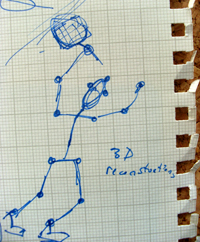
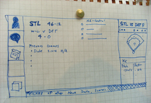

I have been thinking a lot about trends in technology and where we are heading in the near future. Future predicting is notoriously hard and I am not even going to pretend that am able to do it with any sort of confidence. What follows is an experiment, an exercise, only a glimpse of somewhere in the next 5 years. While I find predicting, guessing and extrapolating trends exciting, most people will not see the direct benefits or fully comprehend the technological jumps, possibilities and the acceleration in the hardware, software and wetware realms. To better ground the discussion in something that non-technical people could relate too, I chose sports. I asked myself the simple question: What will sports of the near future look like?
Much of the following was prompted as a thought experiment and study into the upcoming 2012 Summer Olympics in London. I would bet that some, if not all, of what follows will be available to the general public before the start of the games.
I wasn’t interested in the perspective of how the players perceive and adopt technology. They have every monetary incentive to explore new technologies to improve their jobs, if they can eek our a fraction of a second faster pace, it gives them an advantage of their competitors. Athletes have been buying better shoes, lighter clothes, even evolving the equipment for generations, but we as spectators are still sitting and watching in pretty much the same manner as they did over 2000 years ago at Circus Maximus. For me, the far more interesting technical transitions will occur with the spectators. So as an exercise, I began to look into some further questions:
- How can simple and not so simple technologies increase the enjoyment of sporting events?
- How can technology complement the game and help spectators learn and enjoy more about what they are witnessing?
- How can they better engage and interact with others at the event?
Circa late 02000s, it became popular to slap the word “Social” onto the front of other terms as a placebo to make them seem new again. At some point the placebo loses its power when we no longer believe in it. At sporting events, the social aspect already exists, you are there with friends, you are supporting a team, or you are at least cheering for someone or something to win. There is an affinity with others in the group, but it is localized to those whom you are geographically close to. One experiment was to explore the formation of these same bonds, but over a distance, between you and other people at the same event or even remotely. Could a localized Instant Messenger system be setup for people in the stadium to have a giant, or several smaller, chat rooms during the event?
Questions then arise: is this even a good thing? Is this something people want? Is the experience strong enough as a replacement for direct verbal and visual contact?
These are just a few of the topics that go into researching technology trends, but ultimately, just because we can, doesn’t mean that we should.
The following are just three possible ideas which could exist for the spectators of the near future. They make use of existing technologies and adaptations repackaged for the sports market.
Team colours
We are currently being courted by the endless possibilities of new low-power flexible displays. These are predicted to make eBook reading wonderful, revolutionizing magazine, newspapers and other dead-tree media. Todate, we have seen ePaper in wrist-watches, posters, magazine covers and even computer displays. Soon the cost vs. quality will reach a point where we can use this technology in everyday products, even in a disposable manner. Imagine the back of the box of your breakfast cereal being a digital display. Another potential usage for flexible displays will be in clothing, specifically for fan’s sporting jerseys.
Sports jerseys made from this material could change colours and text at the owner’s command. No more embarrassing moments when you meet your friends only to realized you all have the exact same player, colour and team jersey! With flexible displays it would be a snap, or more precisely-a call, to change the look. Much like we download ringtones for our phones, we could download different patterns to our garments. This would allow you to customize your sports kit on the fly. You would only need to purchase one blank jersey that could be changed for home and away games or for your local team and teams at the national level. It could also be customizable to just change sections of the material. If you and your friend choose the same number, you just push a button and it instantly changes.
From a marketer’s perspective they would sell less jerseys initially, but at a low cost of 99 cents per “design” download, customers would continue to purchase more and more styles throughout the life time of the garment. Also, the ability for the clothes to “call home” and auto-update is a boon to advertisers. If last year ABC widget co. sponsored the team, and this year it is XYZ Widgets Ltd. they could pay to push new styles to everyone’s jersey. It might cost them a few thousand dollars, but just think, you now have lots more walking billboards pushing your product and not the previous sponsor’s.
One additional side-effect of ubiquitous connectivity is that the clothes could begin to form a mesh network, no pun intended. Each jersey could communicate with the others around it – they would be aware the presence and quantity of functionally matching clothing. Since the clothes can tall to each other, whole sections seats of seats could change colour in time to create patterns for the TV cameras. Like a chameleon changes to match the surroundings, sections of seats could change to support the team.
Infusing technology into clothing and fabrics is something I have been watching closely. There have been some clothing companies making jackets with controls for your iPod music player. Nike has a watch that connects with the iPod and their Nike+ run tracking device. This enables you to control the songs and get an aural run report at a touch of a button. More and more what we listen to, what we watch and how we act will blend with what we are wearing.
Player movement tracking
Using embedded technology such as RFID or other tagging systems, it would be possible to know the exact locations of those chips during the game. Since the chips are so small, light-weight and inexpensive, they could be attached and disappear seamlessly into the players’ accouterments; balls, bats, clothes and other equipment.
If we know all the points in the players’ bodies, additional equipment would allow us to record and map this data. It could then rendered into a virtual world that is easy for us to explore from any point in space. If we wanted to see the replay from the angle of the ball or the goalie it would be simple. We could measure reaction time or the speed of an arm throwing a ball. We could even watch the high-dive from the swimmer’s perspective as they spin, flip and rotate in mid-air. It would be possible to truly take a fly-on-the-wall approach and passively watch any event from any perspective without interfering.
If you always wondered what it was like to have a front-row seat at a basketball game, now you can. Having this telemetric player data allows the spectator to watch it from the angle or position they choose, from their seat or any seat they choose in the stadium or above it. Imaging watching Formula 1 from a blip, the inside turn on corner one or from that little box where they wave the checkered-flag.
Currently, the replay on the jumbo-tron is edited and cut from the various camera angles and is limited to the existing footage. Instead, these videos could be high quality computer renderings from any angle and position. If conventional camera weren’t looking at players away from the action, then there is no possible replay. With the renderings it is possible to look at any aspect of the game, even freeze a player’s location or add a “trail” so it is possible to see the path where they have travelled.
 There is a company called ProZone which has already developed a simple version of this idea. They have a MatchViewer application which does some analysis of the game. You can see a top-down view of the pitch and it shows you where players ran to and from, who passed to whom and other information.
There is a company called ProZone which has already developed a simple version of this idea. They have a MatchViewer application which does some analysis of the game. You can see a top-down view of the pitch and it shows you where players ran to and from, who passed to whom and other information.
It is using data extracted from the video feed to build-up where the players were located and with some sort of image recognition is able to follow the ball and therefore passes. While is in an incredible feat, it is still very basic. With this information you get a flatland 2D world. This might be good for basic tactical analysis or post-game review, but from a spectators point of view, there is not much value in this over their own eyes.
The ability to be in control and call the shots as always been desirable. As more and more people are content creators, why are we forced to watch the event in only one way? People are making movies and TV shows from within video game worlds. Where ever their character can move, the camera moves as well. People are recording fly-bys in Google Earth – you can watch a virtual helicopter ride down the Grand Canyon, or create one yourself. There is no doubt that this same yearning for personalization will extend to sports.
Supplementary Stats
The next big area of interest was statistic. Everyone is an armchair general who knows exactly what is best. I thought about how and where we get supplemental information about the event. After plotting it all out, the possible sources fell into three major buckets. Firstly, from local knowledge, people directly around you contributing their thoughts and facts. Secondly, from broadcasted information presented within the stadium such as the announcers and scoreboards. Finally, the third way to gather additional information would be from an outside broadcast source such as radio or television. Hyper-local, local and foreign are the three buckets considered.
Hyper-local: Geographically Local Knowledge
Having other fans sitting around you can be one source of information. While it might be biased and subjective, it allows for a discussion back and forth between you and the people geographically close to you. There is always the problem that no one around has any additional information, or if they do, they might not be sharing. This goes for events that you are watching at the stadium as well as on a couch at home with friends
The main advantage of a hyper-local discussion is just that, it is a discussion. The number of people communicating is small enough for everyone to take turns and offer their opinions. This is something the other two buckets do not allow for very easily.
If we look back at the original questions of it is possible to built these hyper-local type relationships and knowledge sharing over a longer distance. Would a localized stadium IM client/server be useful and would it re-create those hyper-local chats over the entire stadium?
Most of what exists today are simple chat rooms around a website text feed. The other people are not at the event, nor are they watching it in the same manner as other spectators. The idea of a stadium-wide IM network will probably have vastly different usage between a 5 day test cricket match and a minute long horse race, not mention the attention you would need to pay to the screen while a stadium of 20,000-80,000 people are all IMing simultaneously! It is doubtful it would scale, it would more-likely be used to coordinate a meeting place for further face-to-face, or possibly fist-to-face discussions.
Local: Internal Broadcasts
While inside a stadium there are various ways to glean additional information. These come from the scoreboard, the announcers over the PA system and other visual and audio sources. These are broadcast to the entire stadium and offer a limited, trusted, factual information source, but you only get basic information about the players, events at hand and the score. The downside is that this is only a one-way medium. As a spectator you only consume the data, not to mention it is filtered through the stadium rules and guidelines. Broadcasting to everyone in the stadium means that the information is the most basic, as to appeal to as many people as possible without offending any fans of the rival teams or players. Since people who attended the event in-person came to see the event, not listen to the announcers, the roles any broadcaster play are secondary, therefore the information offered is not attempting to compete with what you are seeing and is scaled back to accordingly.
I want to avoid saying that there is no way technology can improve internal broadcasts, but by their nature, there is not much to improve on. It is a one-way communications for people without access to foreign sources without competing for your visual and auditory attention. As we are carrying more and more always-on and always-connected devices, the rolls of the local announcer is diminished, because we can easily look-up anything they tell-us, without broadcasting it to everyone.
What internal broadcasts are the best at, is reporting with speed. When someone scores, finishes a race, or completes a task, it can automatically be pushed to the scoreboard and over the PA system. Foreign sources take time to update, index and then push the information back down the wire. Local, internal broadcasts won’t disappear, but their roles will become more defined and confined.
Some stadiums are experimenting with SMS short codes. On the scoreboards or other prominent places, they advertise the number you can send SMS messages. Currently, this is used for reporting problems and incidents, something that was probably unnecessary as well as generating many false-positives by crying wolf, driving-up ticket prices and annoying fans. It is possible that stadiums could begin to use this technology to start conversations, but there is always a bottleneck with the centralized receiving of the SMS messages and replying by official stadium sources.
Foreign: External Broadcast
The radio announcers and other external sources offer more information about the event than local scoreboards and internal announcers while still being of a high, un-biased quality. Radio does offer a slight two-way discussion, in that you are able to call the station and possible get your questions answered or your opinion on the air. The downside is that radio is a mass-communication a one-to-many, so the possible number of questions and answers to people ratio is just too high in this medium. Similarly to the SMS problem within the stadium.
Since the sports broadcast is primarily aimed at people not in attendance, most of what the radio is describing is information directly about the events in the game which you are witnessing, possibly even on a delay. So the amount of “new” and unknown information gleaned from outside sources would be limited to fun facts spouted during commercial breaks.
Narrowcasting
The newest possibility for gaining additional information would be from an outside source which does allow for a one-to-one type of communication is sometimes called “narrowcasting”, the opposite of broadcasting. The web is very good at this sort of thing, allowing individual sessions to serve custom data to each person while still connecting to a large audience.
In the near future stadiums will be blanketed in free wifi. This would allow for attendees to live-blog, remotely purchase food, souvenirs, tickets to more events, find the nearest bathroom, report problems, the possibilities are open-ended and this cloud of wifi will be taken advantage of by most all mobile devices. Today, only hi-end devices such as the Nokia or iPhones have built-in wifi, but it will be standard on all new phones in the near future.
With all of this in-mind, how can we design a site which allows for this one-to-one communications to supplement the event, not replace it. The device needs to fade into the background so the focus is still on the players on the field and data streaming in.
What the this information ends-up looking like is still very much to be determined, but it will be molded by the event, the audience and the capabilities of the device. As an example, we can look at some functionality that might be possible on a device like an iPhone.
 Using old historical data it would be possible to build a sort of IMDB for athletes. There is an excellent resource for Olympic data which is a good model to begin to explore for additional sports. Imagine flicking through the data and see past performance, hitting, runs, previous records and have the ability to model more complex questions and compare the same data with home/away games, similar temperatures conditions, etc. The same sort of things the radio announcers could say, but never do because it isn’t “interesting” enough for the masses or they only have 30 seconds during the time-out and just read scripted “fun facts”. For larger events, it would be possible to get not only historical facts about the athletes’ performances, but about the sport itself, the history of the team or country. This additional information would help to round-off the overall knowledge of the circumstances in which these two teams meet.
It would also be possible to communicate with other people within the stadium, conducting real-time chat. Connecting like-minded fans to discuss strategies, team gossip or managerial styles. Is it possible to build micro-communities within a single fan base and is it possible to also build communities across different fan bases connected by some other aspect of the event? Two fans might support different teams, but are in agreement about new rules or in a consensus about the poor stadium concessions.
I am interested in developing what this interface might look like for smaller mobile devices. What functionality do spectators expect? What features are required and which distract from the enjoyment of the game? How is it possible to supplement the event in real-time with historical and predictive information which enhance the understanding of what you are seeing in front of you.
Is something like a “VH1 Pop-up Video” style applicable to sports? A constant stream of facts pouring in and only when you look down at the device do you get the fun fact bubble in sync with the event in front of you.
We already have all the data we need to build many of these ideas, the tricky thing is how to make it accessible and easy to manipulate. This is where the breakthroughs will occur, not at the hardware level, but with interface design.
As one final thought,what has been discussed up to this point is simply re-thinking existing data, none of this takes into consideration the ability generate this information from the spectators themselves. Imagine what will happen when there is a stadium full of camera phones taking pictures and recording video. As we have seen with Microsoft’s Seadragon and Photosynth applications, it is possible to build a large composite from all the individual pieces.
Spectating in the near future
At some point in the near future what we consider a sporting event generated by a computer program and an game acted-out by people will be no different. Everything we have access to in a video game we will expect in real-life. Viewing player’s fitness with small status bars overlaid virtually above their heads, instant replays from any angle, historical stats about existing records, all will be available to spectator at the touch of a button, and if we can apply this technology to sports, there is no reasons why it can’t be applied to just about anything, medical, education, training, construction or manufacturing.
As technology becomes more wide-spread and pervasive these sorts of devices and interfaces will become an important part of our daily-lives. We don’t want interruptions and blinking lights demanding our attention, we want access to data and help when it is appropriate. It needs to be easy and exhaustive if we will be depending upon it to fully compliment our experiences.